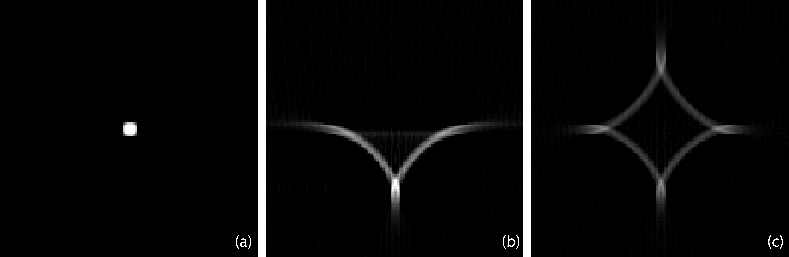
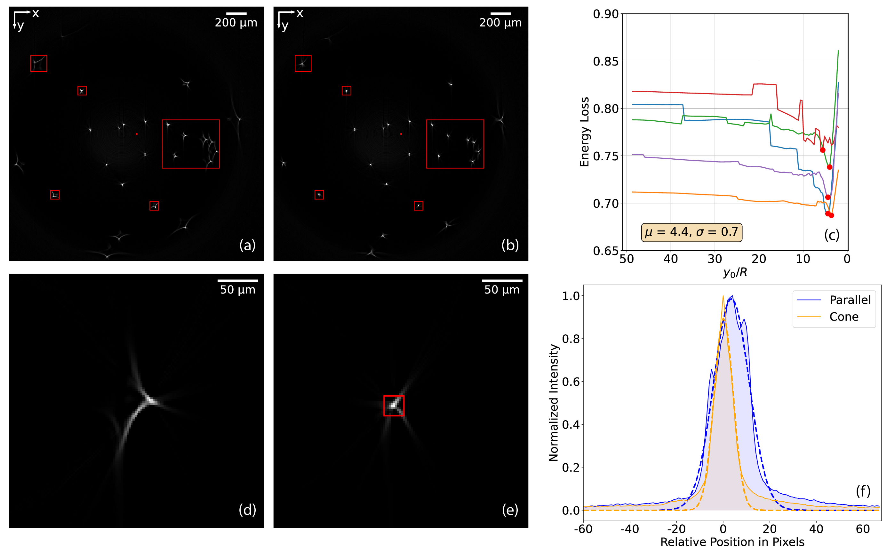

Results¶
To validate our model of the RI mismatch, we simulate the setup of a real emission OPT experiment for imaging fluorescent beads.


Fig. 18 Seagull artifacts due to mismatched refractive indices with rotation angles \([0,\pi)\) (b) and \([0,2\pi)\) (c), compared to the ground-truth fluorescent bead (a).¶
We use the cone-beam model to generate projections with an origin position \(y_0\) defined by \(y_0/R=5\). We then reconstruct with the FBP algorithm. Our phantom consists of 13 beads, each of unit intensity and of size \((5\times5)\) pixels \(\,\) (one pixel is 2.45 \(\mu\)m) embedded in a slice of a cylinder with radius \(R=1024\) pixels contained in a square cuvette of length 2048 pixels. Moreover, it is important to consider that the depth of field in OPT usually covers only half of the sample, in contrast with X-ray CT. To approximate the out-of-focus phenomenon of the other half, we implement rotation angles over both \([0, \pi)\) and \([0,2\pi)\).
All simulations have been performed using the Tomosipo toolbox [23], which is a wrapper for the tomographic-reconstruction library ASTRA [125]. We have adapted a cone-beam geometry as this modality is common in tomography [126] and has already been implemented efficiently in Tomosipo. It enables us to accelerate the computations on CPU and GPU and to use the already implemented Feldkamp-Davis-Kress (FDK) algorithm for cone-beam reconstructions [127] in stacks of slices of size 2 to obtain the 3D volume. This is crucial in OPT because a time- and memory-efficient reconstruction algorithm is required to perform high-resolution imaging of mesoscopic samples and process large datasets (1200 projections of \((2048 \times 2048)\) pixels \(\,\) each for the experiment presented below). Accurate models such as [100] hit computational bottlenecks and become infeasible for temporal and spatial imaging at high resolution.
We show in Fig. 18 (a) a vertical section of the reconstruction of a bead sitting at the exact center of the image. This ground-truth image is free of artifacts. As the distance of the bead to the center of the image increases, the seagull artifacts become more pronounced, which is reflected in the size of their wings. We give a closeup view of a non-centered bead with strong seagull artifacts in Fig. 18 (b)-(c). More precisely, its reconstructions using the rotation angles in \([0,\pi)\) and \([0,2\pi)\) are shown in Fig. 18 (b) and (c), respectively. The magnified ground truth image is provided in Fig. 18 (a) as a reference. In agreement with our model, the FBP-based reconstruction of a mismatched experiment introduces similar artifacts to those observed in real data.
Next, we show how to mitigate the seagull artifacts on experimental data of fluorescent beads. Fluorescent FITC-labeled 1 \(\mu\)m microspheres based on melamine resin (90305-5ML-F, Sigma) were used as specimen, in accordance with the preparation procedure described in [13]. Approximately 0.01 mL of particle solution was mixed to 10 mL of 1.5% agarose before molding to achieve a nearly colloidal solution. The acquisition was performed shortly after preparation to avoid fluorescence quenching of the signal. The RI \(n_2\) of BABB in our experiment is 1.56. The RI \(n_1\) of the agarose changes over time, but the mismatch between the two materials is initially of the order of 0.1.


Fig. 19 Reconstructions of a 3D volume of fluorescent beads integrated along the \(z-\)axis using a parallel-beam model (a) and a cone-beam model (b). (c): Energy loss of 5 beads over a range of origin guesses. The red point on each curve indicates the minimum. Same slice of the 3D reconstructions of a bead using parallel-beam (d) and cone-beam (e) models. The square in (e) is the region \(\Omega_{\mathrm{in}}\) used to compute the energy loss. (f) Intensity profiles along the direction of maximum variance of the bead in (d) and (e). The blue and orange lines represent the intensity profiles for the parallel-beam and cone-beam models, respectively. The dashed blue and orange lines represent the fitted Gaussian point spread functions.¶
Before reconstruction, we first compensate for the misaligned rotation center. However, because the fluorescent beads are very sparse compared to an actual biological sample, they carry too little information for one to apply the standard method based on the maximum variance of a reconstructed slice [13, 93, 124]. Instead, we perform a grid search and determine the best estimate of the center of rotation when the circle-shaped artifacts caused by the wrong rotation center vanish.
As discussed before, another step is to determine the optimal origin of the cone beam. We do this automatically by minimizing the loss metric
where \(\Omega_{\mathrm{total}}\) is a square region that fully encloses the whole seagull artifact, \(\Omega_{\mathrm{in}}\) is a smaller square region enclosing only the central part of a bead (see Fig. 19 (e)), and \(I_k\) denotes the intensity at pixel \(k\). The quantity \(E_{\mathrm{loss}}\) hence indicates how concentrated the distribution of intensity is around the center of a bead. The smaller \(E_{\mathrm{loss}}\) is, the less energy is spread outside the true location of the bead, and the better the reconstruction is. We provide in Fig. 19 (c) the energy loss of five different beads at varied locations in the field of view. We observe that the energy loss behaves similarly for all five beads and achieves its minimum at about the same value of each curve. This means that the optimal origin guesses are consistent over several beads, which confirms the robustness of the proposed automatic approach. We thus adopt the average value \(\mu=y_0/R= 4.4\) as the optimal one for all the beads in the reconstruction. Compared to \(\mu\), the theoretical value of \(y_0/R=15\) derived from Eq. (36) highlights the importance of performing this automatic calibration to account for the origin shift discussed in the Appendix. The 3D reconstruction of a \((2048\times2048\times1024)\) volume and grid search to find the optimal origin over 200 points for one bead take 95 seconds and 108 seconds on CPU and GPU, respectively.
In Fig. 19, we compare the reconstructions using the parallel-beam model or our approach. We can observe a clear radial dependence of the size of the seagull artifacts. Our proposed cone-beam model successfully mitigates artifacts, see for example the beads identified by boxes. To quantify the improvement of our method, we provide intensity profiles along the direction of maximal variance of the uncorrected and corrected reconstructions in Fig. 19 (f). The full-width half-maximum along the direction of maximum variance, calculated based on the Gaussian fit, is 47 \(\mu\)m and 22 \(\mu\)m for Fig. 19 (d) and (e), respectively. This means that our corrections lead to a 52% increase in resolution.
The code and data to produce the results are available online [128].